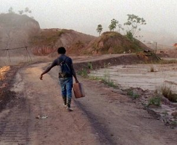

Good Luck

Ben RussellFR / DE 2017 – Super-16 auf HD – 143 min – Serbisch, Saramaka
Deutsche Premiere
B: Ben Russell – K: Ben Russell, Steadicam: Chris Fawcett – S: Ben Russell, Maja Tennstedt – T: Jakov Munižaba, Simon Apostolou, Nicolas Becker – P: KinoElektron (FR), CaSk Films (DE) – V: Stray Dogs
www.dimeshow.com
Hartes Licht von Grubenlampen inmitten der Finsternis, in beinahe surrealen Einstellungen wird die Leinwand wie zur Skulptur einer unterirdischen Welt, überall Erde, Stein, Dunkelheit – und das kleine menschliche Licht, das sich nicht unterkriegen lässt. Mit einer Super-16-Kamera hat Ben Russell die Glückssuche an zwei unterschiedlichen Orten verfolgt: in einer Mine in Serbien und im Dschungel Surinames. Kupfer oder Gold erhoffen sich die grabenden, wühlenden, filternden Männer. (Frédéric Jaeger)
freitag 6 okt 21.00 uhr filmmuseum münchen
Ben Russell * 1976. Er studierte Kunst und Semiotik an der Brown University sowie Film und neue Medien am Art Institute of Chicago. Er arbeitet als Fotograf, Kurator und Experimentalfilmschaffender. Ben Russell lebt in Chicago.
Filme The Ataraxians, Extra Terrestrial 2004 – Trypps #1, The Red and the Blue Gods, The Twenty- One Lives of Billy the Kid 2005 – Trypps #2, Michoacan: La Muerte / El Traidor 2006 – Peace Noise, Trypps #3 2007 (5. UX) – Trypps #4, Tjúba Tén / The Wet Season 2008 – Let Each One Go Where He May 2009 (5. UX) – Trypps #7 (Badlands) 2010 (6. UX) – A Spell to Ward Off the Darkness 2013 (mit Ben Rivers, 9. UX)
GOOD LUCK wurde auf der Documenta14 als 5-Kanal-Installation gezeigt.